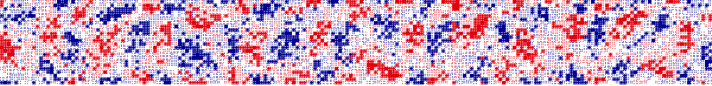

Modèle spatial · calcul dans votre navigateur
Cochez les candidats en lice. Le modèle recalcule les intentions de vote pour cette liste — y compris une liste qu'aucun institut n'a jamais testée.
Un candidat retiré ne disparaît pas : ses électeurs se répartissent entre les candidats les plus proches de lui sur l'axe, ce que montre le graphique plus bas.
Ajouter une tendance — « et si ce candidat gagnait un point par mois d\'ici au scrutin ? »
Part estimée au jour du scrutin, pas aujourd'hui : l'incertitude inclut la dérive d'opinion d'ici avril 2027 et l'écart habituel entre intentions déclarées et bulletins déposés. C'est pourquoi les intervalles sont larges. Les barres somment à 100 % sur la liste cochée. Survolez une ligne pour voir la distribution complète.
Chaque courbe est le noyau d'un candidat : son sommet marque sa position estimée (μ), sa largeur son rayon d'action (σ), et l'aire sous la courbe est son score. La bande du bas montre qui l'emporte à chaque endroit de l'axe — retirez un candidat et regardez son territoire passer à ses voisins immédiats, pas se répartir au prorata. Une tendance, elle, se lit tout autrement : elle recrute sur tout l'axe, et le plus fort là où le candidat était le plus faible — c'est ce que veut dire la prélever uniformément, faute de savoir à qui elle prend vraiment. Survolez un nom pour lire son μ et son σ.